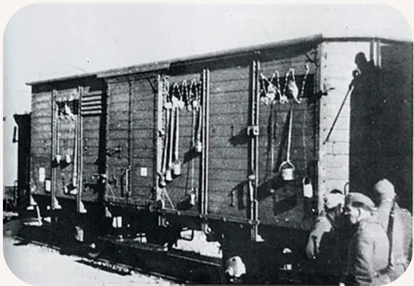

Les déportations désignent le transfert forcé de populations arrêtées par le régime nazi vers les ghettos, les camps de concentration et les centres d’extermination. Elles constituent l’un des mécanismes centraux de la persécution et de la destruction des Juifs d’Europe, mais touchent aussi les résistants, les prisonniers politiques, les Roms et d’autres groupes ciblés.
Les déportations sont organisées de manière administrative, méthodique et industrielle.
Les déportations commencent par des rafles : arrestations massives menées par la police politique, la Gestapo, les SS ou les forces locales collaboratrices. Les personnes arrêtées sont rassemblées dans des écoles, des gymnases, des commissariats ou des camps de transit.
Les rafles sont souvent préparées à partir de fichiers, de listes ou de dénonciations.
Avant d’être envoyées vers les camps, les victimes passent par des lieux de regroupement appelés camps de transit. On y vérifie les identités, on confisque les biens, et on prépare les convois.
Ces camps servent de plateforme logistique pour les déportations.
Les déportations se font principalement par train. Les victimes sont entassées dans des wagons à bestiaux, sans eau, sans nourriture, sans sanitaires. Les trajets peuvent durer plusieurs jours, parfois plus d’une semaine.
Les conditions de transport sont inhumaines : chaleur, froid, manque d’air, promiscuité extrême. De nombreuses personnes meurent pendant le trajet.
Les convois mènent vers :
Chaque convoi est planifié par les services du RSHA, notamment la section chargée des affaires juives et des déportations.
Les déportations reposent sur une bureaucratie complexe : ordres de transfert, listes nominatives, fiches de recensement, autorisations de transport. Les services de police, les autorités locales et les chemins de fer collaborent pour assurer le départ des convois.
Cette dimension administrative montre que les déportations sont un processus systématique et planifié.
À l’arrivée, les déportés sont triés. Dans les centres d’extermination, la majorité est envoyée directement à la mort. Dans les camps de concentration, les survivants sont affectés au travail forcé dans des conditions extrêmes.
Les familles sont séparées, les biens confisqués, les identités effacées.
Les déportations sont aujourd’hui commémorées dans de nombreux lieux de mémoire. Les wagons, les rails, les quais et les archives sont conservés pour rappeler l’ampleur de la tragédie.
La transmission de cette histoire est essentielle pour comprendre les mécanismes de la haine, de la discrimination et de la violence d’État.